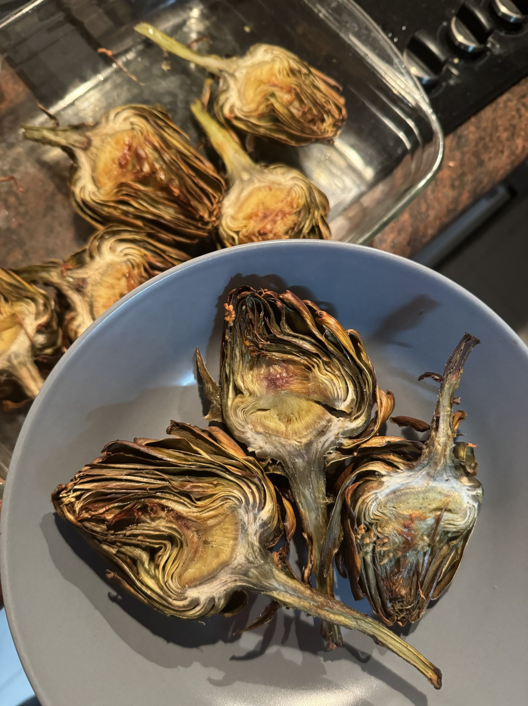

Alcachofas al horno
Ingredients
2×
- 6 alcachofas
- aceite de oliva
- sal
- pimienta

Preparación
Paso 1
Limpiar 6 alcachofas: quitar las hojas exteriores duras y pelar el tallo. Cortarlas por la mitad.
Paso 2
Ponerlas en una bandeja, aliñar con aceite de oliva, sal y pimienta.
Paso 3
Hornear 40min a 200ºC, hasta que estén doradas por fuera y tiernas por dentro.